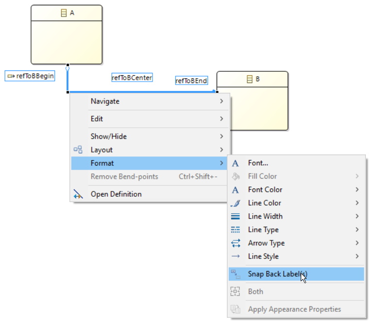

Summary: Have the capability to snap back all labels of an edge with a single action
| Version | Status | Date | Authors | Changes |
|---|---|---|---|---|
| v0.1 | DRAFT | 2016-07-26 | pguilet | Initial version. |
| v0.2 | PROPOSAL | 2016-08-03 | pguilet | None. |
Relevant tickets:
Currently, to snap back an edge label, you have to use the corresponding action.
So if you have an edge with three labels on it (begin, end and center labels) and you want to snap back all, then you have to select each one and snap back it.
This is not really user friendly.
We want to be able to snap back all edge labels on one action.
To do that, we will add a snap back action on the edge that will snap back all the labels at the same time. This action must work in case of multi edge selection.
As a reminder, the current steps to snap back all labels of an edge (an edge can have a maximum of three labels) are :
This is not an efficient way to snap all labels of an edge.
A better solution that we will implements for this evolution is to add an action «Snap Back Labels» when selecting an edge containing all labels we want to snap back.
The following picture specifies how to access the action :

The action will be available in the following context :
In this context, all the edge labels (up to three labels) will be positioned at their default location.
In this context, each selected edge will have its label positioned to their default location.
The User documentation will be updated to describe the snap back actions available for labels.
When doing the specification, we found a bug regarding diagram node border label.
This border label have the action Snap Back available in contextual menu. But the use of it does not snap back the label.
Associate ticket is : https://bugs.eclipse.org/bugs/show_bug.cgi?id=498578